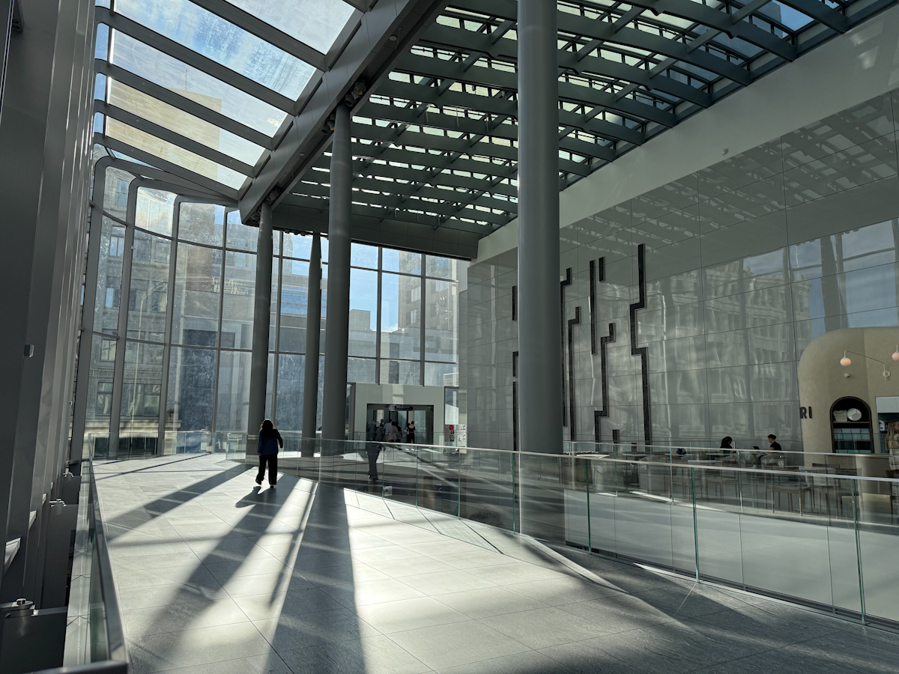
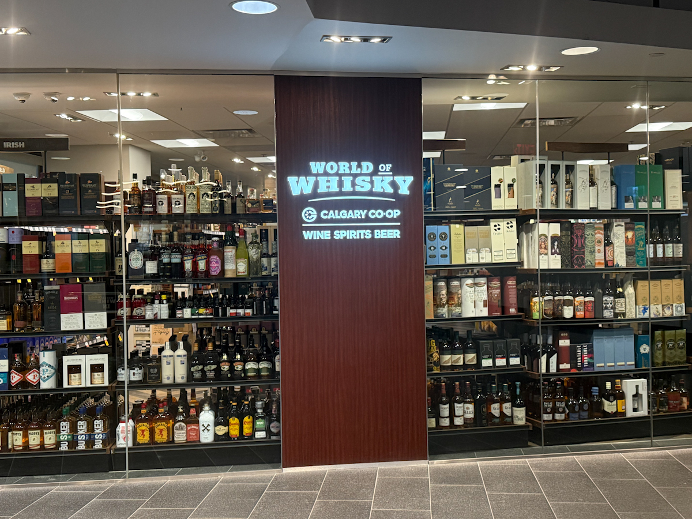
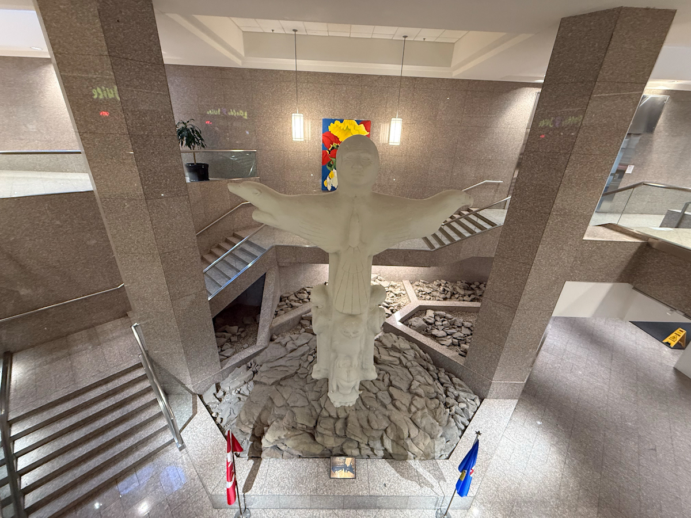
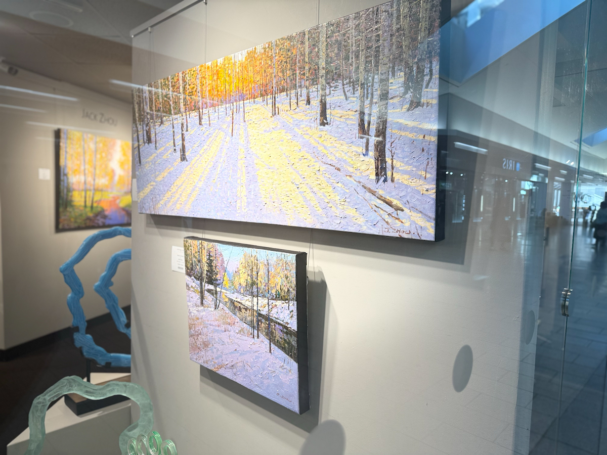
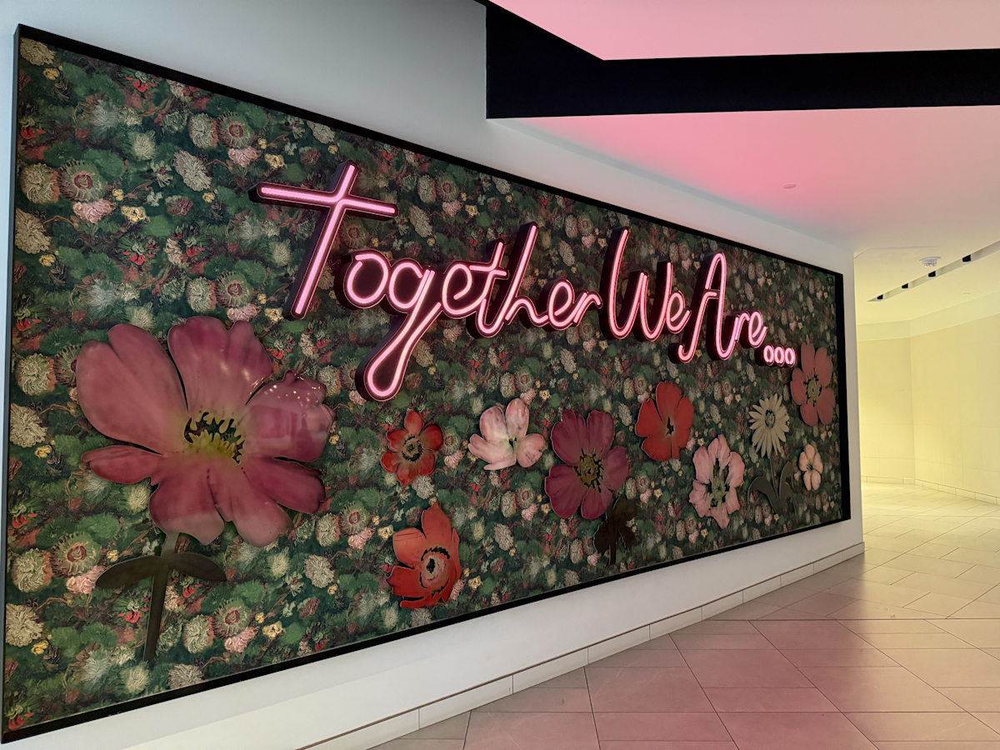

After passing through the Intact Place location, where can you find this large indoor mural created by Jordi Bonet?
Which building features this glass-covered walkway connected to Calgary’s +15 Skywalk network?
Which building do you pass through to find the “World of Whisky" store?
Which building contains this circular atrium connecting several +15 skywalk pathways?
In which building can you find this sculpture?
Which building has this food court?
Which building is home to this art gallery?
What location do you need to pass through to see this art piece?
What type of artwork is displayed in this collection at Devonian Gardens?
Where can you find this turtle sculpture?